FRAGILE EXPRESS
Сервис доставки хрупких посылок по России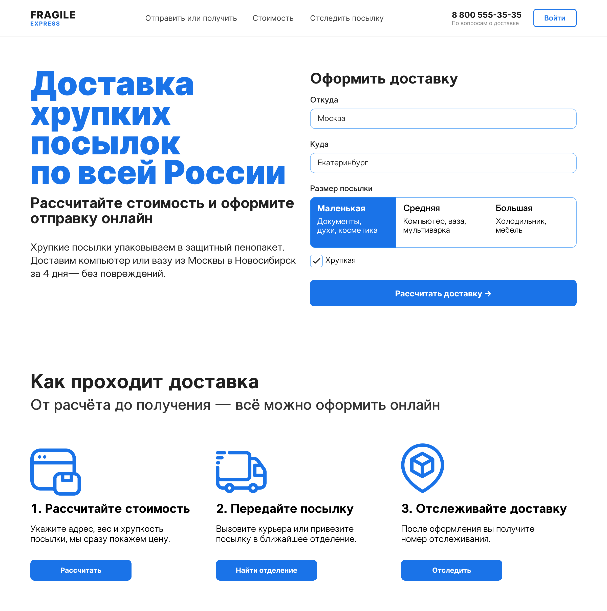
Главная страница сервиса
Проектная работа первой ступени Школы дизайнеров Бюро Горбунова — расширенная версия курсовой задачи.
| Роль | — UX/UI Designer (соло) |
| Тип | — Product Design, Web |
| Задание | — 4 ключевых экрана |
| Сделано | — полный сервис |
| Инструменты | — Figma |
Контекст
Доставка хрупких посылок — это сценарий с тревогой внутри. Человек отправляет
Существующие сервисы усиливают эту тревогу: стоимость неизвестна до последнего экрана, способы доставки объясняются плохо, ошибки в форме сбивают с шага и непонятно, как вернуться.
Задача была не просто оцифровать логистику — а убрать тревогу на каждом шаге.
Что я спроектировал
Задание курсовой — четыре экрана. Я сделал полный сервис: от расчёта стоимости до личного кабинета с историей отправлений.
Не потому что нужно было показать объём. А потому что четыре экрана без контекста — это иллюзия продукта. Настоящие UX-решения живут в переходах, состояниях и крайних случаях.
Сервис включает:
- — расчёт стоимости с прозрачной разбивкой,
- — оформление отправки курьером и через ПВЗ,
- — адресную книгу и автоподбор адреса,
- — оплату с обработкой ошибок,
- — трекинг посылки в реальном времени,
- — личный кабинет с повторными сценариями.

Полный пользовательский флоу. Пять этапов — от расчёта до получения. Каждый этап имеет альтернативные ветки и состояния ошибок.
Ключевые дизайн-решения
Вместо того, чтобы идти экран за экраном — покажу пять решений, которые считаю самыми важными.
01 — Прозрачный расчёт стоимости
Проблема. В большинстве сервисов цена появляется в конце оформления — после того, как пользователь уже потратил время на заполнение данных. Это нечестно и создаёт ощущение ловушки.
Решение. Расчёт стоимости — первый шаг, а не последний. Пользователь видит цену до того, как начал оформление. И видит, из чего она складывается: базовый тариф, расстояние, доплата за хрупкий груз.
Разбивка стоимости — это не просто информация. Это доверие. Человек понимает, что его не обманывают.
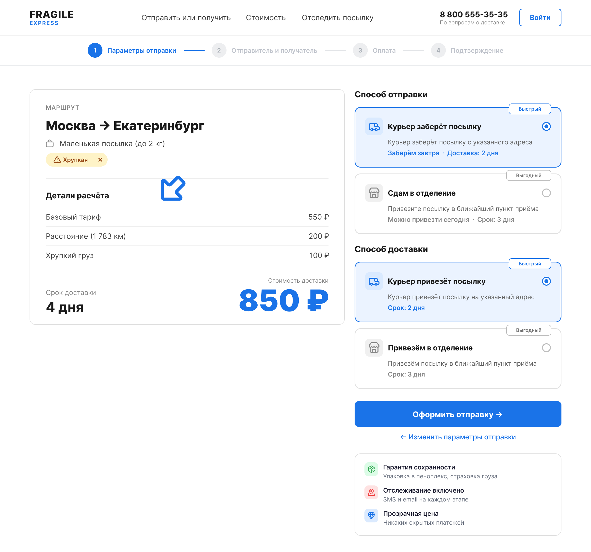
Стоимость разбита на составляющие: базовый тариф, расстояние, доплата за хрупкий груз. Пользователь понимает за что платит — до того как начал оформление.
Почему именно так. Альтернатива — показывать только итоговую цену. Проще в реализации, но убивает доверие. Решил в пользу прозрачности, даже если это усложняет интерфейс.
02 — Состояния расчёта как часть UX
Проблема. Состояния — загрузка, ошибка, недоступность курьера — обычно делаются в последний момент как технический минимум. Пользователь видит пустой экран или непонятное сообщение и не знает что делать.
Решение. Я спроектировал четыре состояния расчёта отдельно, как самостоятельные экраны. Каждое объясняет, что происходит и что делать дальше. Особенно важно состояние «курьерская доставка недоступна в вашем районе» — пользователь не теряется, а видит альтернативу прямо здесь.

Четыре состояния одного экрана: загрузка, пересчёт, ошибка сервиса, недоступность курьера в районе. Последнее — самое важное: вместо тупика пользователь видит альтернативу.
Ошибки не должны разрывать сценарий. Они должны его продолжать.
03 — Разветвлённый сценарий отправки без потери ориентации
Проблема. Сервис поддерживает четыре комбинации: курьер забирает / сдаёшь в ПВЗ — и курьер доставляет / забираешь в ПВЗ. Это разные флоу с разными данными и разными картами. Легко запутаться, в каком сценарии ты находишься.
Решение. Выбор способа отправки и получения — отдельный экран с явным переключением. После выбора интерфейс адаптируется: показывает нужные поля, нужную карту, нужные подсказки. Пользователь всегда видит, что выбрал, и может изменить.
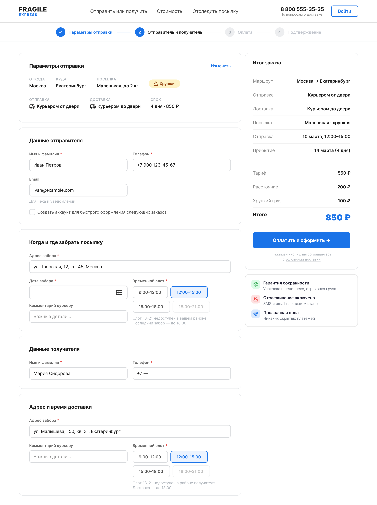
Сценарий с курьером: форма разделена на три логических блока — отправитель, получатель, параметры. Меньше полей на экране одновременно — меньше когнитивной нагрузки.
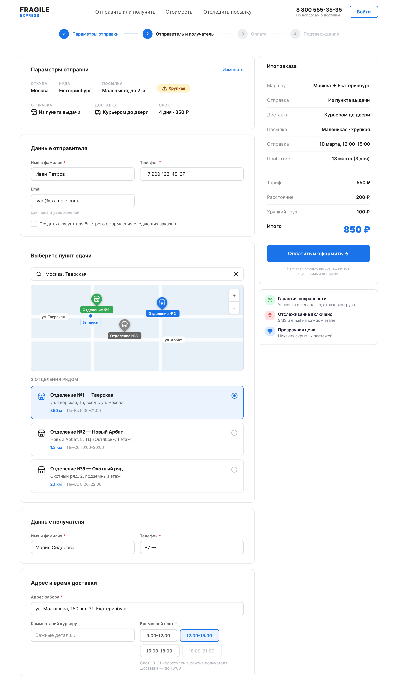
Тот же шаг оформления, но для сценария с пунктом выдачи. Карта и список отделений заменяют поле адреса доставки. Интерфейс адаптируется к сценарию, а не заставляет пользователя адаптироваться к интерфейсу.
Форма разделена на логические блоки: отправитель, получатель, параметры доставки. Каждый блок — отдельный шаг в голове пользователя. Меньше полей на экране — меньше тревоги.
04 — Адресная книга и автоподбор
Проблема. Повторная отправка — частый сценарий. Человек регулярно отправляет посылки одним и тем же получателям. Каждый раз заново вводить адрес — это потерянное время и раздражение.
Решение. Адресная книга с сохранёнными адресами доступна прямо из поля ввода. Автоподбор адреса работает с первого символа. При повторной отправке система предлагает подставить данные из предыдущего заказа.
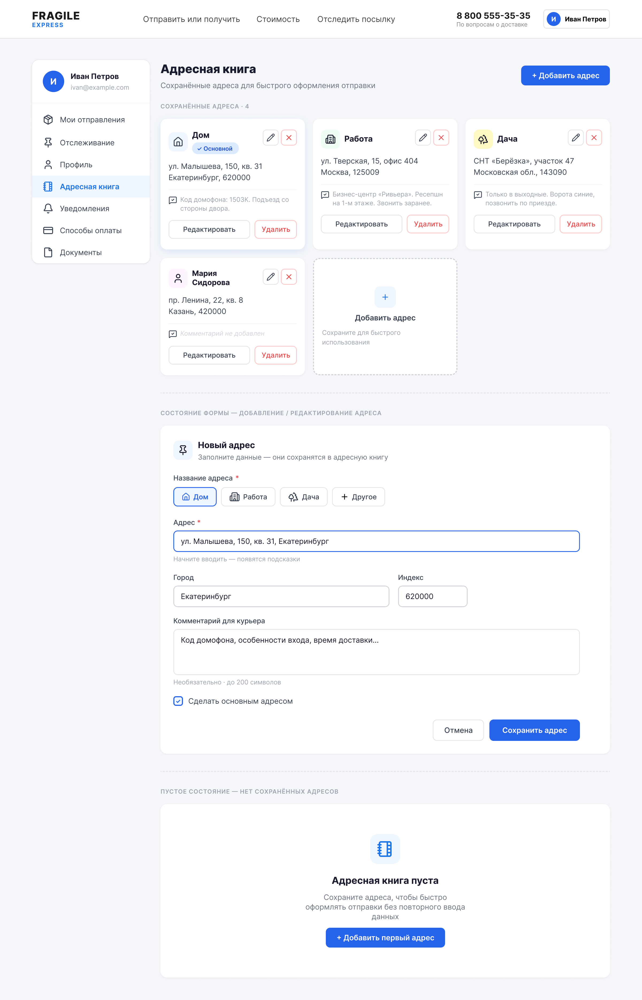
Адресная книга открывается прямо из поля ввода. Сохранённые адреса доступны в один клик — повторная отправка не требует заполнения формы заново.
Это небольшое решение, но оно меняет ощущение от повторного использования сервиса. Второй заказ оформляется вдвое быстрее первого.
05 — Состояния формы без разрыва сценария
Проблема. Ошибки валидации — самый болезненный момент в любой форме. Пользователь заполнил всё, нажал "Далее" — и видит красные поля. Часто непонятно, что именно не так, и где искать проблему.
Решение. Ошибки появляются рядом с полем сразу после потери фокуса — не после отправки формы. Каждое сообщение объясняет конкретно: не «неверный формат», а «введите номер в формате +7 (XXX) XXX-XX-XX». Отдельно обработаны нестандартные случаи: адрес не найден, нет доступных временных слотов, нет ПВЗ поблизости.
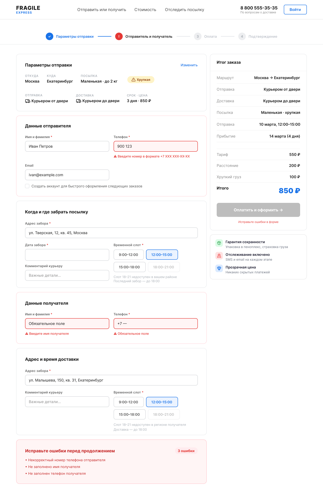
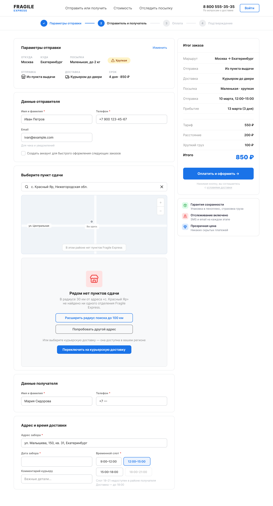
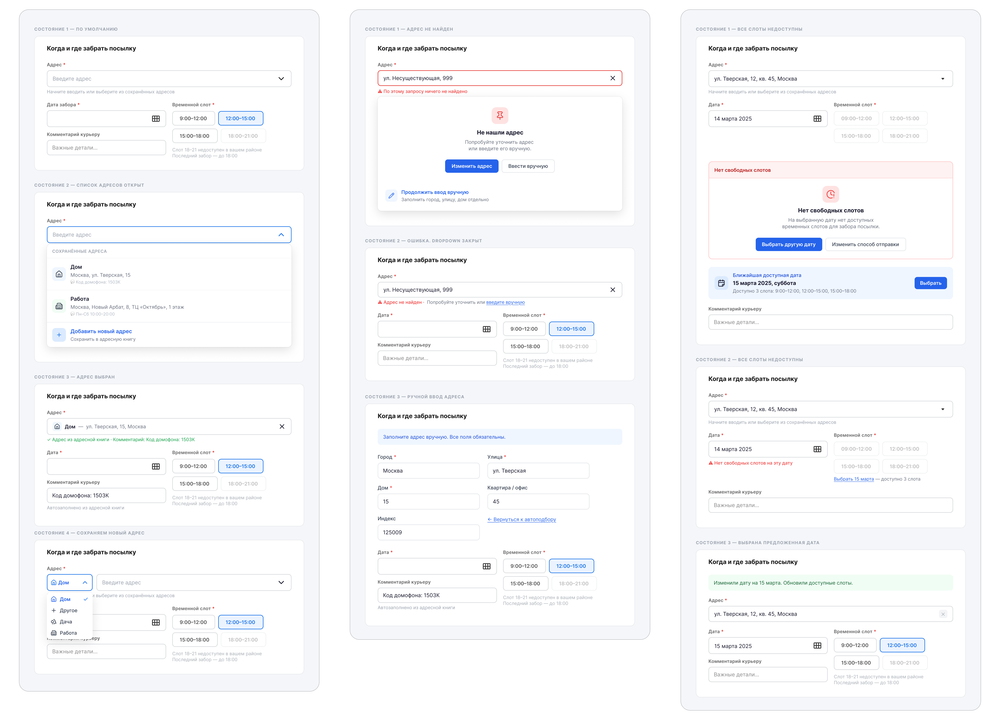
Ошибки появляются сразу после потери фокуса, а не после отправки формы. Каждое сообщение объясняет конкретно, что не так и как исправить. Отдельно обработаны нестандартные случаи — нет ПВЗ рядом, нет свободных слотов.
Оплата
Экран оплаты собирает всё в одном контексте: итоговую сумму, детали заказа и способы оплаты. Пользователю не нужно возвращаться назад, чтобы проверить данные.
Три способа оплаты: карта, СБП, наличные курьеру. Для каждого — своё поведение интерфейса.
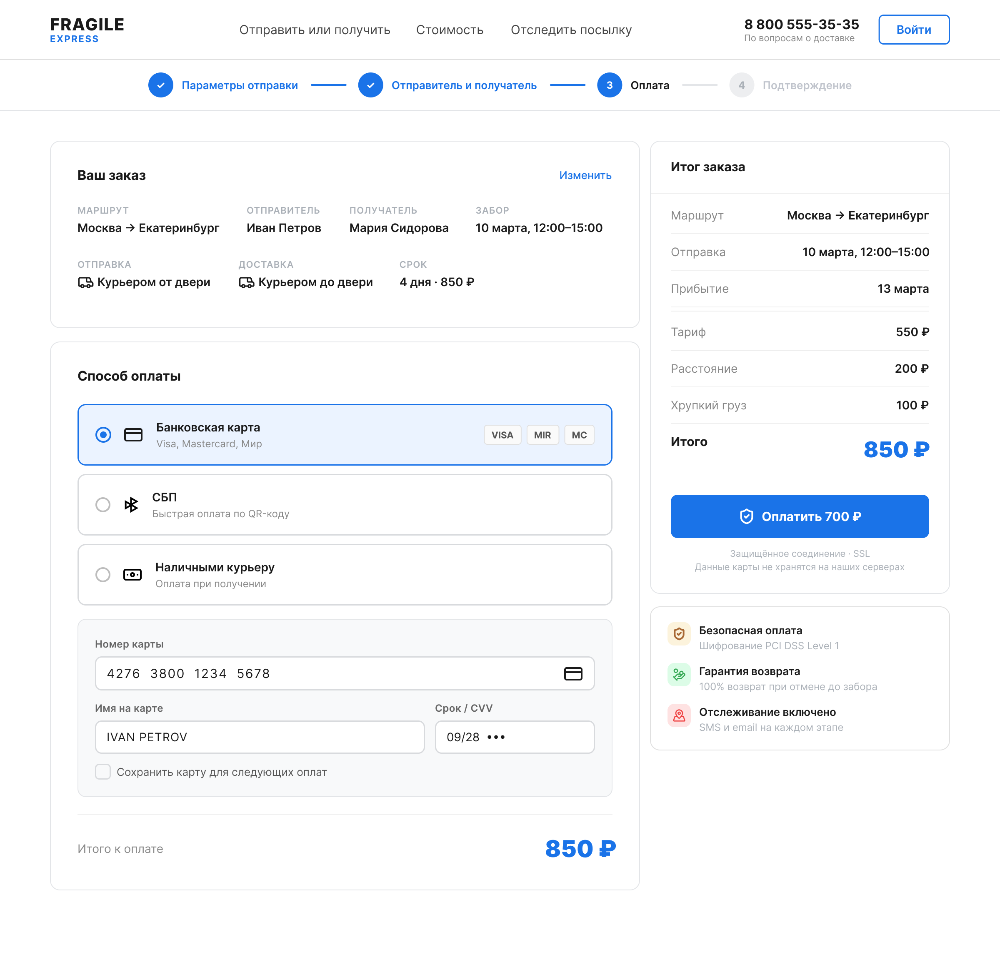
Итоговая сумма, детали заказа и способы оплаты — в одном контексте. Пользователю не нужно возвращаться назад, чтобы проверить данные перед оплатой.
Отдельно спроектированы два критических состояния: обработка платежа и ошибка оплаты. При ошибке пользователь может попробовать снова или выбрать другой способ — не теряя данные заказа.
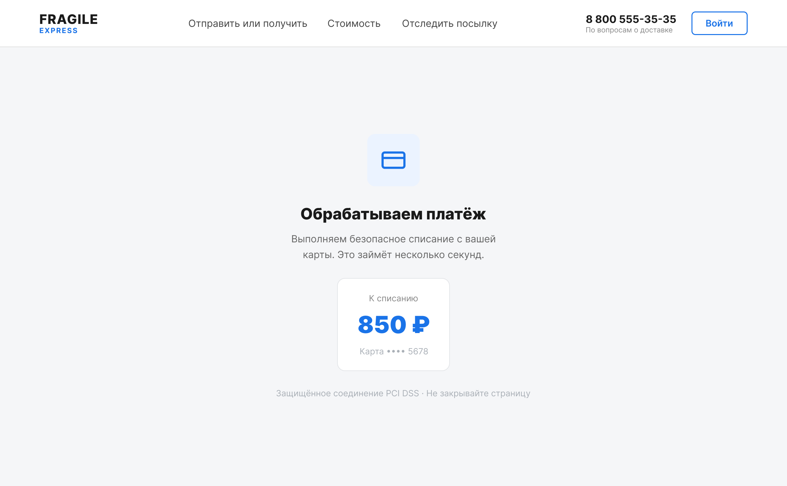
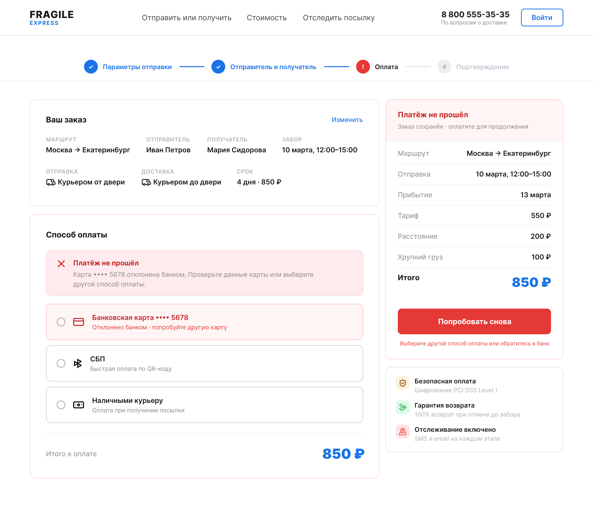
Два критических состояния оплаты. При ошибке пользователь не теряет данные заказа — он может попробовать снова или выбрать другой способ оплаты без возврата к началу.
После оплаты
Экран подтверждения — не просто «спасибо за заказ». Он отвечает на главный вопрос пользователя в этот момент: что будет дальше?
Номер заказа, детали отправки, дата забора, ожидаемая дата доставки, следующие шаги — всё на одном экране.
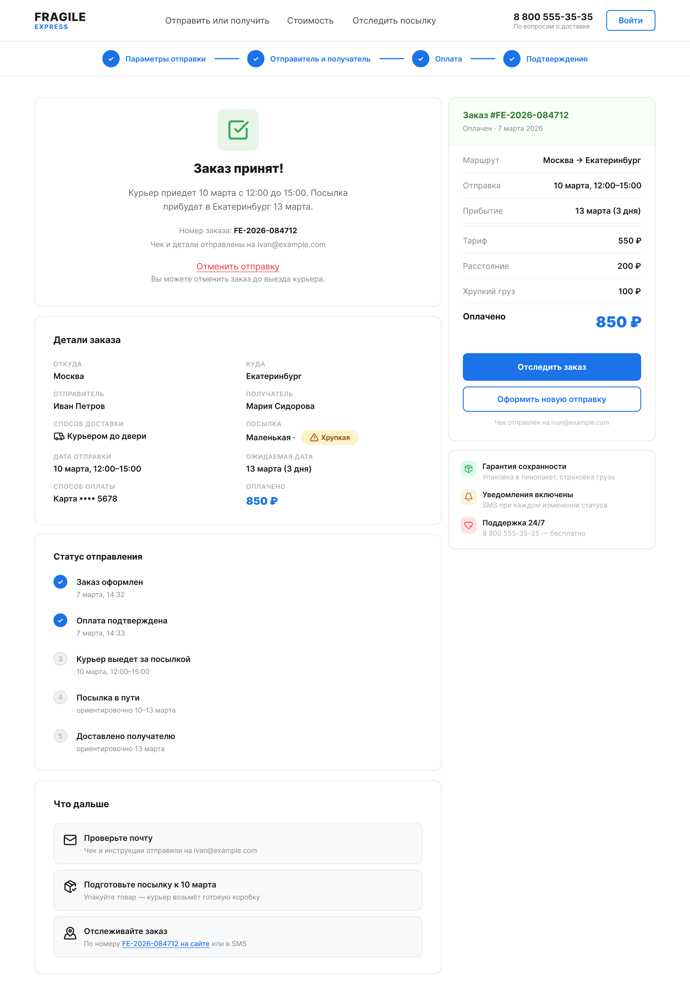
Экран после оплаты отвечает не на вопрос "что произошло", а на вопрос «что будет дальше»: дата забора, ожидаемая дата доставки, следующие шаги.
Трекинг
После оформления тревога не заканчивается — она переходит в ожидание. Экран трекинга показывает маршрут, текущий статус и историю изменений. SMS и email-уведомления при каждом изменении статуса.
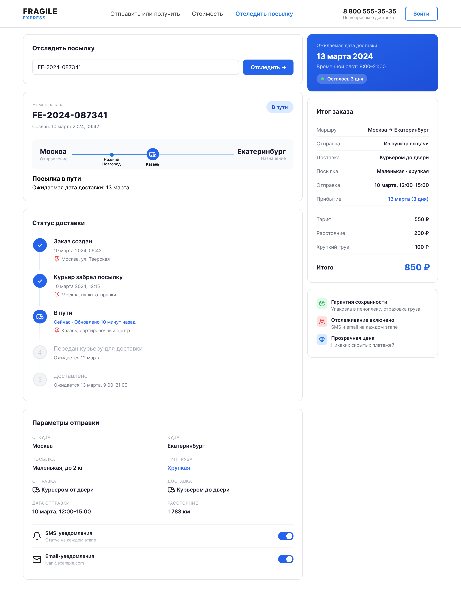
Трекинг показывает не только текущий статус, но и историю изменений. Пользователь видит маршрут целиком, а не только точку, где посылка сейчас.
Личный кабинет
Личный кабинет — это пространство для повторных сценариев. Текущие и прошлые отправления, детали каждого заказа, сохранённые адреса, способы оплаты.
Главное решение здесь — повтор отправки одной кнопкой. Система подставляет маршрут, данные отправителя и получателя из предыдущего заказа. Пользователь проверяет и подтверждает — не заполняет заново.
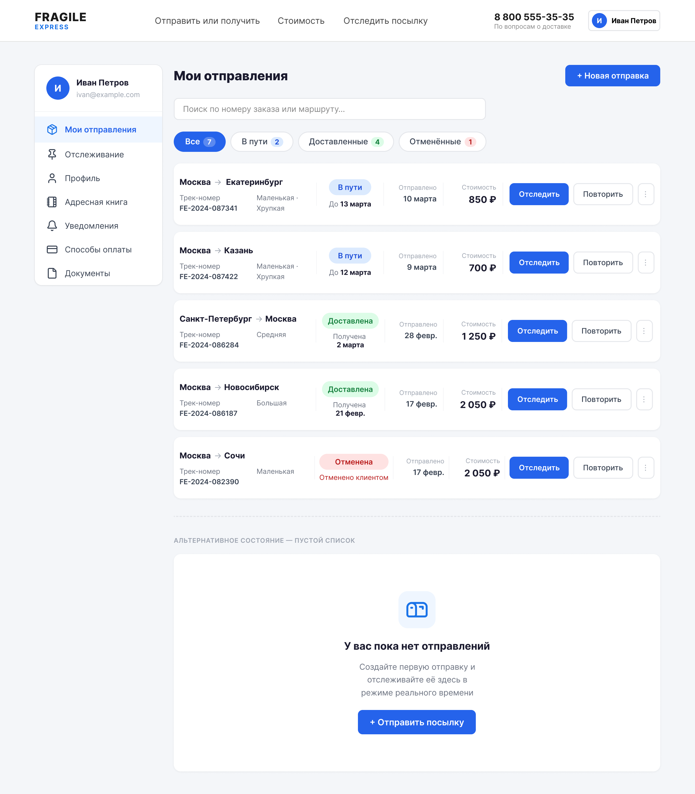
Список отправлений с текущими статусами. Активные заказы — вверху, завершённые — в истории. Быстрый доступ к трекингу прямо из списка.
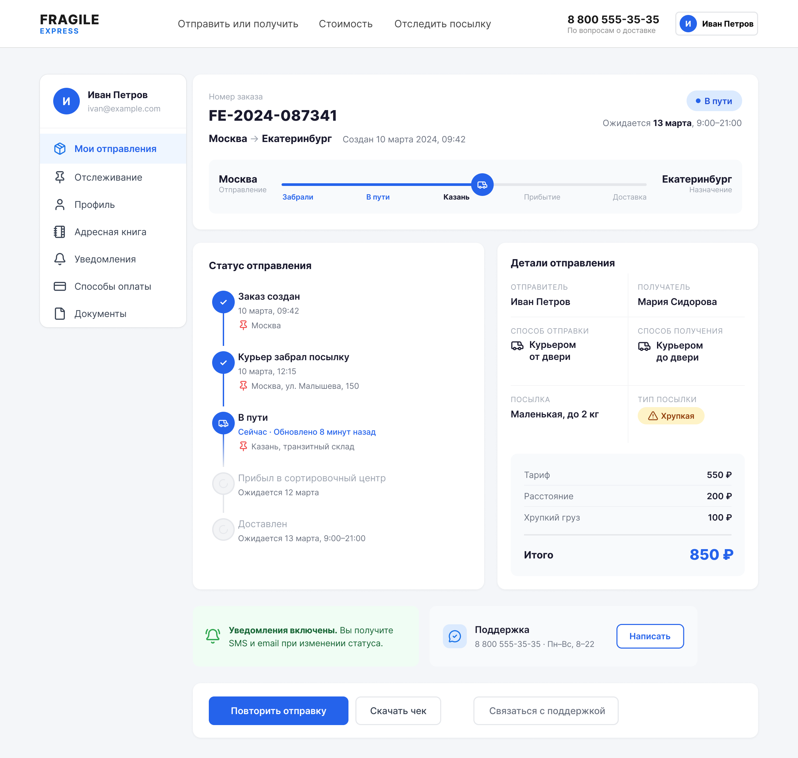
Детальная страница заказа: маршрут, параметры посылки, история статусов, кнопки действий. Отмена доступна только пока курьер не выехал — это обозначено явно.
При повторе заказа система подставляет маршрут и данные из предыдущей отправки. Пользователь проверяет и подтверждает — второй заказ занимает вдвое меньше времени, чем первый.
Отмена заказа
Редкий, но важный сценарий. Пользователь может отменить заказ до выезда курьера. Перед отменой — подтверждение с информацией о возврате средств. После — отдельный экран со статусом и сроками возврата.
Деструктивные действия требуют отдельного внимания. Человек должен понимать последствия до того, как сделал действие.
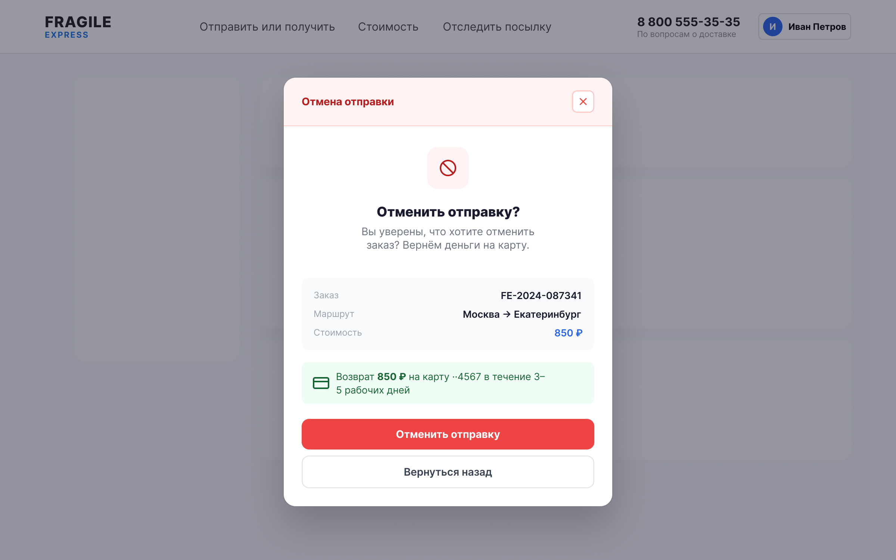
Деструктивное действие требует подтверждения. Модальное окно показывает условия возврата до того, как пользователь нажал «отменить» — не после.
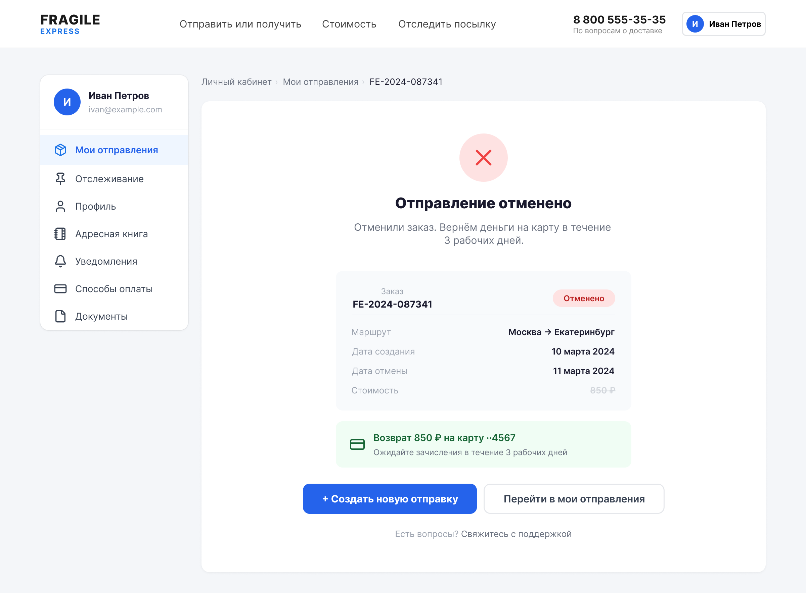
Дизайн система
Все компоненты построены на единой системе: цвета, типографика, состояния, отступы. Компоненты переиспользуются между экранами — карточки, поля, кнопки, статусы.

Цветовая система и типографика. Все решения зафиксированы до начала работы над экранами — это позволило сохранить последовательность на всех этапах флоу.
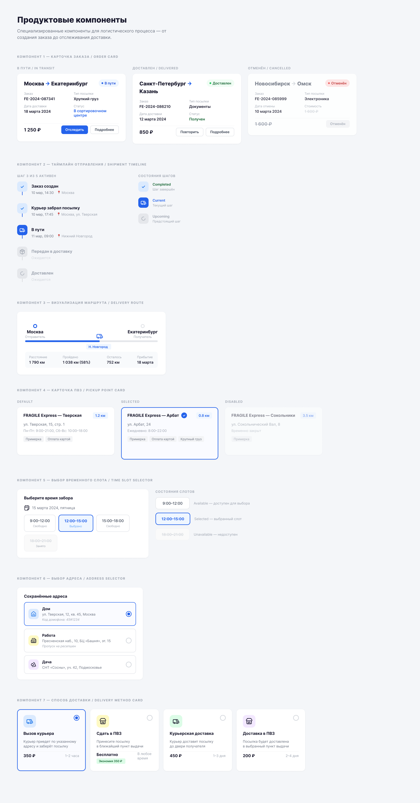
Переиспользуемые компоненты: поля, кнопки, карточки, статусы, уведомления. Один компонент — одно поведение, независимо от контекста.
Что получилось
Полный сервис — от расчёта стоимости до управления отправлениями в личном кабинете. Курсовое задание было четыре экрана. Я сделал сервис, потому что четыре экрана без состояний, ошибок и повторных сценариев — это не продукт.
Главное что я понял в этом проекте:
Несколько вещей, которые сделал бы иначе
Онбординг. Я не спроектировал первый запуск для нового пользователя. Как человек узнаёт о сервисе? Как регистрируется? Этот флоу остался за кадром.
Исследование. Сервис спроектирован на основе анализа существующих решений и здравого смысла — без пользовательских интервью. В реальном проекте это первое, что нужно сделать до первого экрана.
Проектная работа первой ступени Школы дизайнеров Бюро Горбунова.